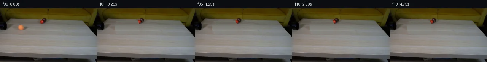

![首帧]()

Round 00
2026-11-04T22:27:15.264528+00:00像素候选变化代码 +218/−0inspection 更新
pixels 607a67928e497e1a · code 8a1860a9c2365154
查看本轮 generate.py 真实 diff
--- previous/generate.py
+++ current/generate.py
@@ -0,0 +1,218 @@
+"""generate.py — PixelWorld-Text frame generation for case_0011.
+
+Orange tennis ball rolls straight out of a black pipe across a wooden table
+towards the right side. 20 frames, 256×144, 4 fps, 5 seconds.
+
+Method: extract the ball as a circular patch from frame 0, inpaint the
+revealed background with local table-texture sampling, then composite the
+rotated ball at progressively rightward positions. The ball follows
+pure-roll kinematics: angular displacement = linear displacement / radius.
+"""
+
+import sys
+from pathlib import Path
+
+import numpy as np
+from PIL import Image
+from scipy.ndimage import map_coordinates
+
+# ---------------------------------------------------------------------------
+# 0. Constants & paths
+# ---------------------------------------------------------------------------
+CASE_DIR = Path(__file__).resolve().parent
+FRAME0_PATH = CASE_DIR / "first_frame.png"
+TMP_DIR = CASE_DIR / ".tmp"
+TMP_DIR.mkdir(exist_ok=True)
+
+W, H = 256, 144
+N_FRAMES = 20
+
+# ---------------------------------------------------------------------------
+# 1. Load first frame
+# ---------------------------------------------------------------------------
+img0 = np.array(Image.open(FRAME0_PATH)).astype(np.float64)
+assert img0.shape == (H, W, 3), f"Expected (144,256,3), got {img0.shape}"
+
+# ---------------------------------------------------------------------------
+# 2. Locate the orange tennis ball
+# ---------------------------------------------------------------------------
+r, g, b = img0[..., 0], img0[..., 1], img0[..., 2]
+
+# Orange ball mask: high R, moderate G, R noticeably > G, G > B
+ball_mask = (
+ (r > 130)
+ & (g > 55)
+ & (r > g + 15)
+ & (g > b + 5)
+)
+ball_ys, ball_xs = np.where(ball_mask)
+by0, by1 = ball_ys.min(), ball_ys.max() # 45, 59
+bx0, bx1 = ball_xs.min(), ball_xs.max() # 47, 61
+ball_cy = int(round((by0 + by1) / 2)) # 52
+ball_cx = int(round((bx0 + bx1) / 2)) # 54
+ball_radius = max(by1 - by0, bx1 - bx0) // 2 + 2 # ~9 (a bit of padding)
+
+print(f"Ball bounds: x=[{bx0},{bx1}], y=[{by0},{by1}], center=({ball_cx},{ball_cy}), radius={ball_radius}")
+
+# ---------------------------------------------------------------------------
+# 3. Build a refined circular mask & extract the ball patch
+# ---------------------------------------------------------------------------
+# Work with a square patch large enough to hold the ball plus rotation padding
+patch_size = (ball_radius + 1) * 2 # ~20 px
+half = patch_size // 2
+py0 = ball_cy - half
+px0 = ball_cx - half
+
+# Ensure patch is within image bounds
+py0 = max(0, py0)
+px0 = max(0, px0)
+py1 = min(H, py0 + patch_size)
+px1 = min(W, px0 + patch_size)
+py0 = py1 - patch_size if py1 - py0 < patch_size else py0
+px0 = px1 - patch_size if px1 - px0 < patch_size else px0
+
+# Circular alpha mask (feathered at edges)
+y_grid, x_grid = np.mgrid[0:patch_size, 0:patch_size]
+cy_local = ball_cy - py0
+cx_local = ball_cx - px0
+dist = np.sqrt((y_grid - cy_local) ** 2 + (x_grid - cx_local) ** 2)
+
+# Alpha: 1.0 inside ball_radius-1, linear ramp to 0 at ball_radius+1
+inner_r = ball_radius - 1.5
+outer_r = ball_radius + 0.5
+alpha = np.clip((outer_r - dist) / (outer_r - inner_r), 0.0, 1.0)
+
+# Extract the ball patch (RGBA)
+ball_patch_rgba = np.zeros((patch_size, patch_size, 4), dtype=np.float64)
+ball_patch_rgba[..., :3] = img0[py0:py1, px0:px1, :]
… diff truncated; 131 more lines …